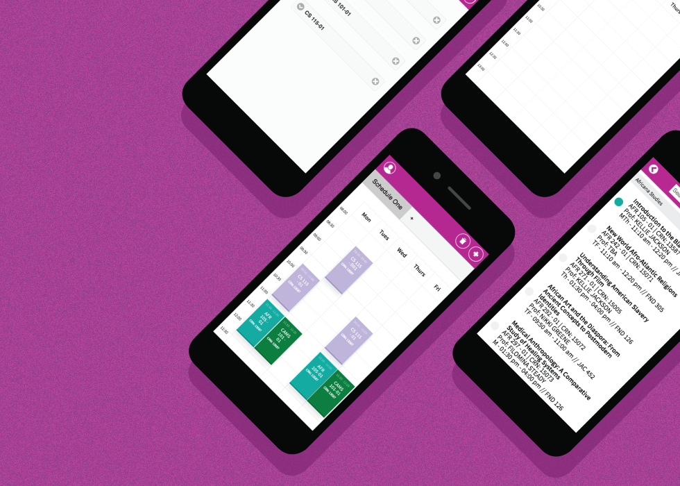
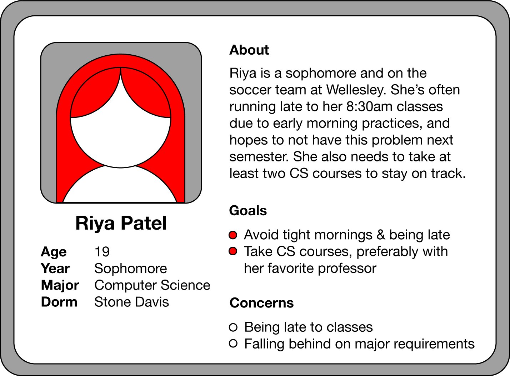
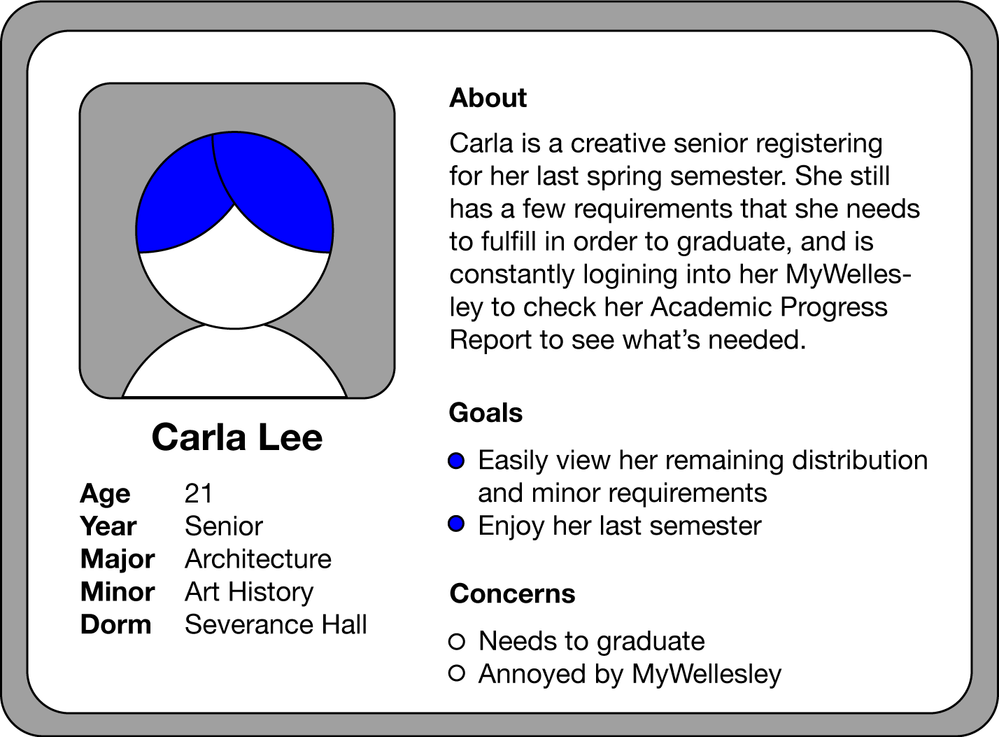
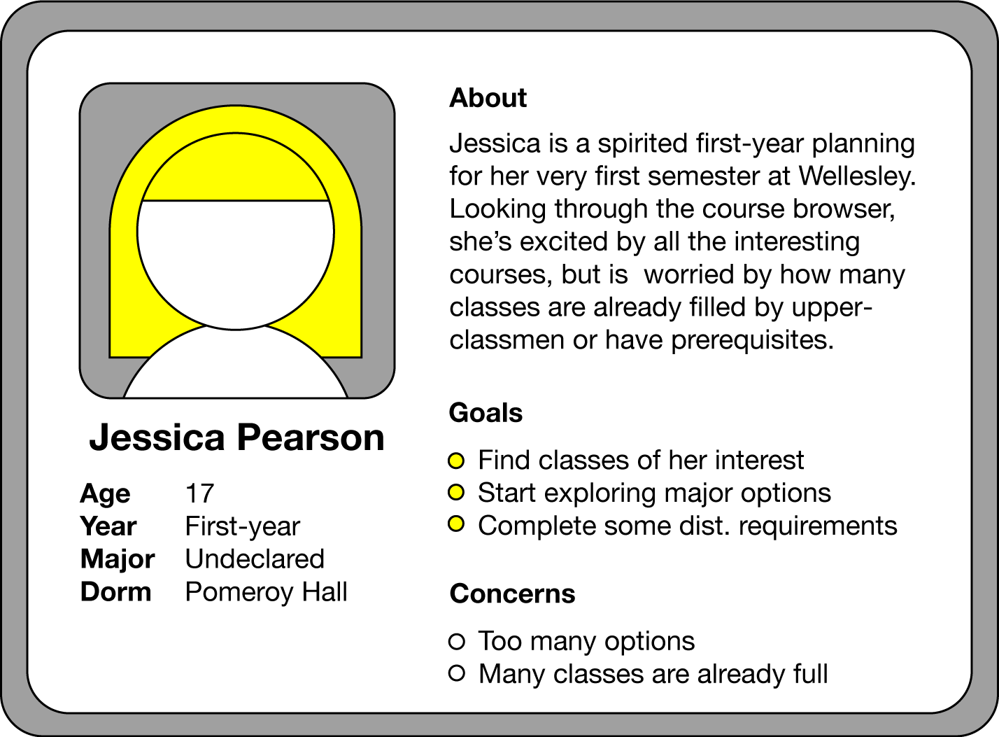
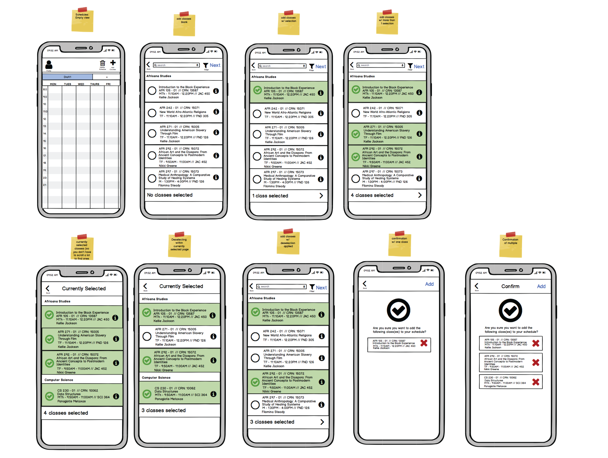
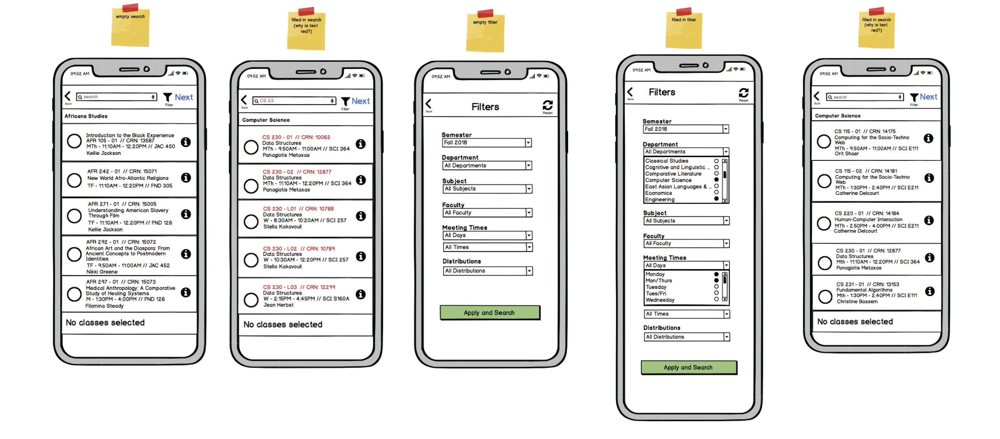
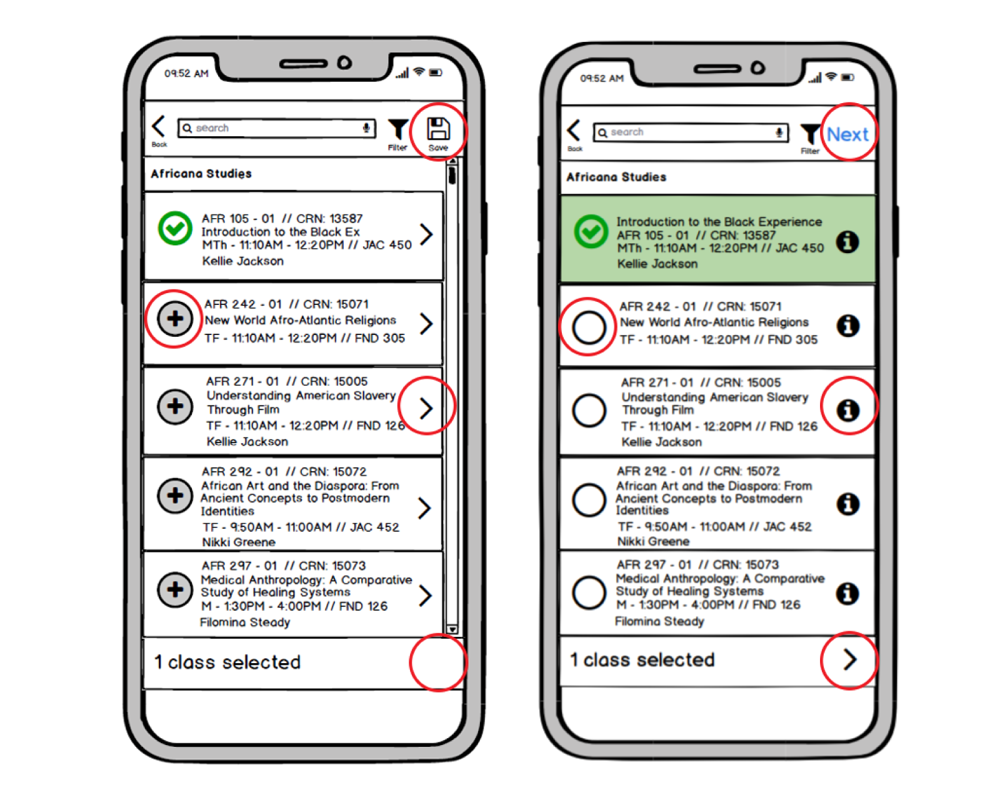
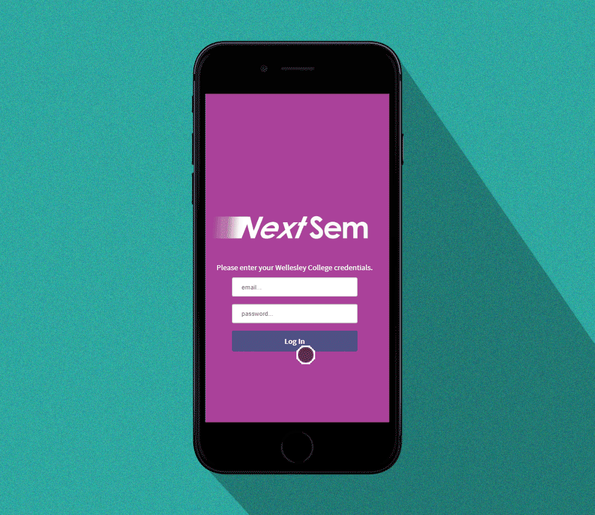
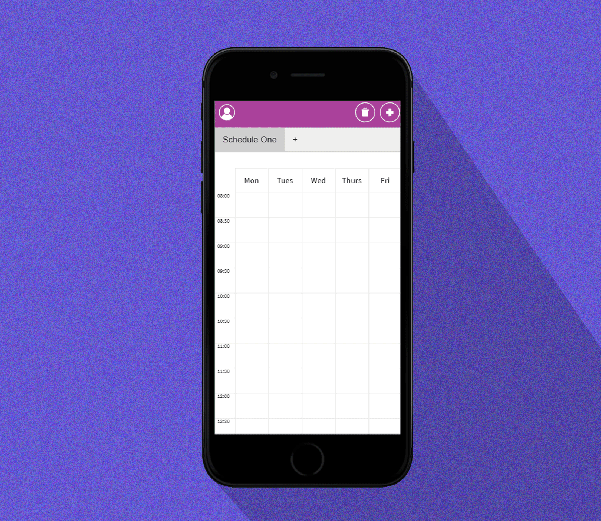
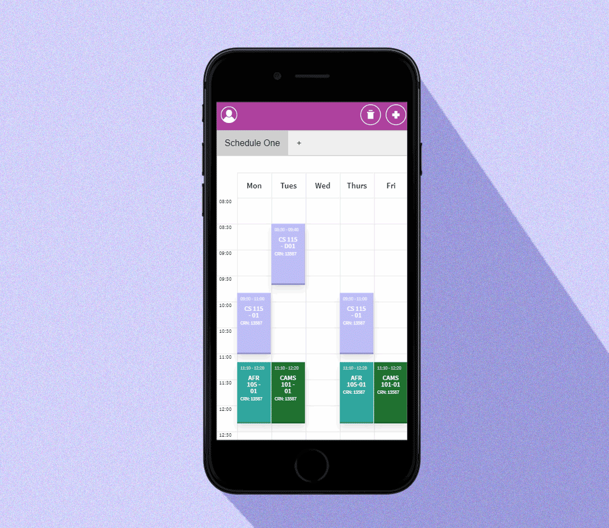

NextSem
Course Schedule Planner Mobile Application
NextSem ✦ mobile user interface ✦ 2018 ✦ team: Christina Chen, Hiya Vazirani
NextSem is mobile application designed for a Human-Computer Interaction course at Wellesley College. The heart of this project is a desire to provide ease and empowerment for Wellesley students planning their semesters and college careers.
The Problem
The existing course management systems at Wellesley College are widely disjointed. To plan for upcoming semesters, students must navigate through two separate sites: Wellesley's official website for the Course Browser and their Major/Minor requirements page(s), and the MyWellesley portal for distribution requirement records in their Academic Progress Report. Often times, students are left to singly track their requirements and desired courses through written notes, Excel sheets, or external schedule mock-up programs.
The Proposed Solution
Design a scheduling mobile application that has consolidated information readily available to students. All to provide high-quality support, convenience, and experience as they plan for future courses and semesters.
  
After collecting documentation from user research via interviews and surveys, we typified our target audiences and created user personas.
 We then began developing our ideation process, and translated sketches into low fidelity wireframes in Balsamiq.

Usability testings provided new insights that allowed us to improve the app's design and flow through simplifying buttons and choosing more guiding iconography. After implementing these changes, we began developing our app using HTML/CSS.
  From the beginning, we knew this project was more than just scheduling courses. It was about building excitement and ownership around one's college career and Wellesley experience. Over the course of the project, we thought about how to make planning for next semester(s) a more welcoming experience. To move away from overwhelming text and possibilities, and towards confident choices. This drove our design choices and lead to NextSem's clean interface with triadic color scheme and san-serif fonts.